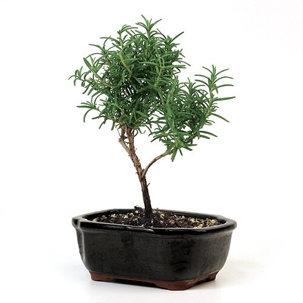
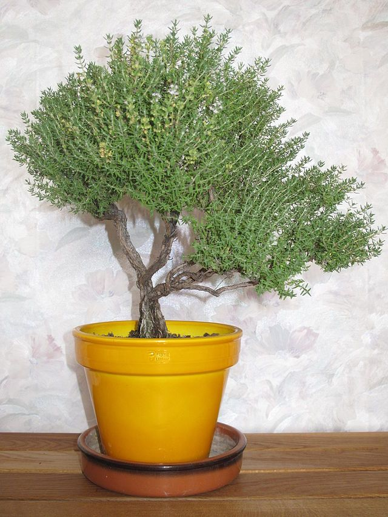

Herbal Bonsai
Some people tend to enjoy turning herbs or simpler plants into Bonsais. They prefer
getting multiple uses out of their plants. For this reason, in this list, our team has compiled a
list of the best herbal Bonsai which can be used for multiple
purposes such as medical uses, cooking purposes, such as enhancing the flavor, etc. They usually
survive even with little care, but tend to require often trimming. They are usually grown on the
kitchen balconies or just outside their
homes for easy access.
Sweet Bay Laurel
Sweet Bay Laurel is a shrubby evergreen plant. It is a great option for indoors. It is
native to the Mediterranean region and is commonly found growing in Europe.
It has dark glossy leaves that are widely used as a culinary herb to flavor soups,
stews, braises, etc. It produces small yellow flowers that grow in clusters, which are followed by shiny
purple berry-like fruits.
It should have moist but well-drained soil for the best results. The more light it receives, the better
it grows. These are not recommended for beginners because they can be a bit difficult to style.
Rosemary

Rosemary does not require perfect sunshine, sea mist, or a never-ending summer to
grow successfully. This Bonsai blooms almost all year and is commonly used in ornamental plantings for
landscaping. The main three factors
required by a rosemary bonsai are proper sunlight, a good drainage system, and good air circulation.
It is an attractive evergreen shrub with needle-like leaves. It has beautiful blue
flowers, which live through spring and summer, filling the air with a soothing smell. It has a fibrous
bark, which sheds partially
every so often increasing its aesthetic looks. The volatile oil in its leaves is used as an
anti-microbial substance that can be used as an effective and soothing medicinal treatment for colds as
well as Bronchitis.
Thyme

Thymes are woody, aromatic, evergreen shrubs that are found majorly on dry grassland
around Europe and Asia. They produce minute oval leaves and beautiful lavender, pink or white flowers.
For bonsai, they are commonly seen as an accessory or decorative plant. Commonly,
they are found growing with a large number of very thin trunks arising from the root base. It is rarely
possible to find thymes with
a single trunk that is thick enough to use as an individual bonsai specimen. It is very important to
note that they show an adverse reaction to acidic chemicals and fertilizers.
Lavender
Lavenders are small evergreen plants that are native to Africa and Australia. When this
plant is placed outside in warm weather, it attracts butterflies and birds.
The leaves are shiny, elegant, and deep green. Lavenders may produce shiny red or
purple-ish fruits that remain on the tree for long periods of time. It is advised to provide a lot of
sunlight but four to six hours
per day should be enough. It should be watered often and the soil should never become dry. If
fertilizers are being used, they should only be used at half the strength since they cause more harm
than good.
Sage French Tarragon
It is a fairly short-lived plant i.e. it does not have a long lifetime. Even in ideal
conditions, it needs to undergo cutting every few years. It does best where the winters are mild and the
summers aren't very hot.
It was historically used in medicinal fields but it is used more in the culinary
sector nowadays especially in fish and chicken dishes to enhance the flavor. The leaves are light green,
thin, and have spikes in them.
They need to be grown in proper and sufficient sunlight in very well-drained or dry soil. They are
generally resistant to insects and diseases but do tend to die in very wet soil.